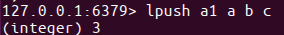
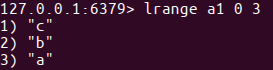
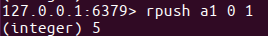
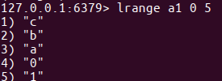
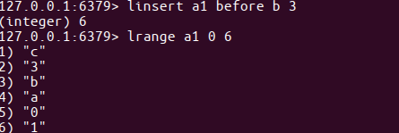
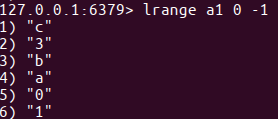
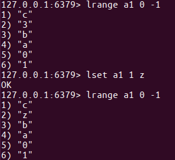
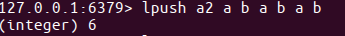
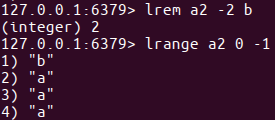

学习目标
- 能够说出Redis中 list 保存的数据类型
list类型
- 列表的元素类型为string
- 按照插⼊顺序排序
增加
在左侧插⼊数据
lpush key value1 value2 ...
例1：从键为'a1'的列表左侧加⼊数据a 、 b 、c
lpush a1 a b c


在右侧插⼊数据
rpush key value1 value2 ...
例2：从键为'a1'的列表右侧加⼊数据0 1
rpush a1 0 1


在指定元素的前或后插⼊新元素
linsert key before或after 现有元素 新元素
例3：在键为'a1'的列表中元素'b'前加⼊'3'
linsert a1 before b 3

获取
返回列表⾥指定范围内的元素
- start、stop为元素的下标索引
- 索引从左侧开始，第⼀个元素为0
- 索引可以是负数，表示从尾部开始计数，如-1表示最后⼀个元素
lrange key start stop
例4：获取键为'a1'的列表所有元素
lrange a1 0 -1

设置指定索引位置的元素值
- 索引从左侧开始，第⼀个元素为0
索引可以是负数，表示尾部开始计数，如-1表示最后⼀个元素
lset key index value
例5：修改键为'a1'的列表中下标为1的元素值为'z'
lset a 1 z

删除
删除指定元素
- 将列表中前count次出现的值为value的元素移除
- count > 0: 从头往尾移除
- count < 0: 从尾往头移除
- count = 0: 移除所有
lrem key count value
例6.1：向列表'a2'中加⼊元素'a'、'b'、'a'、'b'、'a'、'b'
lpush a2 a b a b a b

例6.2：从'a2'列表右侧开始删除2个'b'
lrem a2 -2 b
例6.3：查看列表'py12'的所有元素
lrange a2 0 -1
